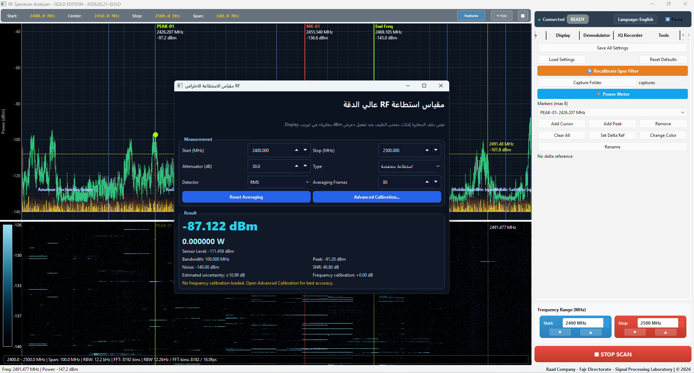

analysis modes
SpectroX Analysis Modes
Wideband RF sweeping and precision power measurement — one platform, two essential workflows
SpectroX Wideband Sweep
Full-range 1 MHz – 7.25 GHz · High-resolution FFT · Real-time waterfall

Wideband RF sweeping across the full operating range with selectable FFT resolution — ideal for spectrum monitoring, frequency-occupancy studies, and interference hunting.
1 MHz – 7.25 GHz Span up to 56 MHz 27 color palettes
SpectroX Precision Power Meter
Calibrated measurements · ENBW · SNR · Uncertainty estimation

Professional calibrated power measurement with reference levels, channel power via ENBW, SNR and uncertainty estimates — suitable for laboratory signal testing and device validation.
dBm / Watt Ref level & step Auto / guided calibration